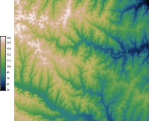
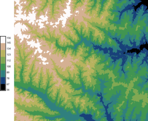
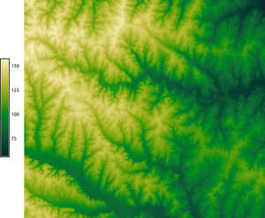

DESCRIPTION
The r.colors.matplotlib module converts
Matplotlib color maps
to GRASS color table format (rules) and assigns it to a given raster map.
The created color table is always relative (color rules with
percent)
When option map is specified r.colors.matplotlib
assigns the color rules to the given raster map.
The color tables is always stretched based on the range of values of the map
Depending on the use case,
it may be advantageous to use the -d to discretize
the color table into intervals.


Continuous (default) and discrete (-d) color table
NOTES
This module depends on
Matplotlib
which needs to be installed on your computer.
Use your Python package manager (e.g. pip) or distribution package
manager to install it.
The selection of color tables depends on the Matplotlib version. Note
that the perceptually uniform sequential color tables, namely
viridis, inferno, plasma, and magma,
are available in Matplotlib 1.5 and above.
Color tables are called color maps (or colormaps) in Matplotlib
and the best overview of available color maps in the
colormaps_reference
example in Matplotlib documentation.
EXAMPLES
Creating a color table as GRASS color rules
Convert summer color table to GRASS color table rules format.
If we don't specify output file, it is printed to standard output.
We set number of colors to 2 because that's enough for this given color
table (it has one color at the beginning and one at the end and linear
interpolation can be used for the values in between).
r.colors.matplotlib color=summer ncolors=2
0.000% 0:127:102
100.000% 255:255:102
In case we want to use a discrete color table with intervals with given
constant color, we use the -d flag and the number of colors
is now the number of intervals, so we want to make it higher, 5 in this
case.
r.colors.matplotlib color=summer ncolors=5 -d
0.000% 0:127:102
20.000% 0:127:102
20.000% 63:159:102
40.000% 63:159:102
40.000% 127:191:102
60.000% 127:191:102
60.000% 191:223:102
80.000% 191:223:102
80.000% 255:255:102
100.000% 255:255:102
Setting color table for a raster map
Now we set several different color tables for the elevation raster map
from the North Carolina sample dataset.
We use continuous and discrete color tables (gradients).
The color tables are stretched to fit the raster map range.
r.colors.matplotlib color=summer map=elevation
r.colors.matplotlib color=winter ncolors=8 map=elevation -d
r.colors.matplotlib color=autumn map=elevation
r.colors.matplotlib color=cubehelix ncolors=8 map=elevation -d
r.colors.matplotlib color=terrain map=elevation
d.legend raster=elevation labelnum=10 at=5,50,7,10
summer, winter, autumn, cubehelix, and terrain color tables applied
to the elevation raster from the North Carolina sample dataset. winter and
cubehelix are set to be discrete instead of continuous.
Setting color table for a vector map
First we create a text file with color rules:
r.colors.matplotlib color=summer output=mpl_summer.txt
v.colors map=points rules=mpl_summer.txt
Using color tables generated by the viscm tool
A viscm tool is a
little tool for analyzing color tables and creating new color tables
(color maps) for Matplotlib. The tool was used to create perceptually
uniform color tables for Matplotlib (for example viridis). The new
color table is stored into a file. In version 0.7, a temporary file
named /tmp/new_cm.py which is a Python source code which
creates a Colormap object. If this module gets a name of
existing file instead of a color table name, it assumes that it this
kind of file and reads object called test_cm as Matplotlib
color table. The possible workflow follows. (Note that you need to
install the viscm tool, e.g. using sudo pip install viscm on
Linux.)
Start the tool, create and save a color table:
Now store the color table in GRASS GIS format:
r.colors.matplotlib color=/tmp/new_cm.py rules=from_viscm.txt
Editing color table in viscm (right): the yellow dot on the blue spline must
stay in the colored area as the red line moves. Reviewing color table
properties is done using several displays including color blindness
simulations.

A color table from viscm applied to the elevation raster
from the North Carolina sample dataset.
The same works for any Python files which follow the same schema,
so it works for example with files from the
BIDS/colormap repository.
SEE ALSO
r.colors,
v.colors,
r3.colors,
r.cpt2grass,
r.colors.cubehelix
colormaps_reference
example in Matplotlib documentation
AUTHOR
Vaclav Petras, NCSU OSGeoREL